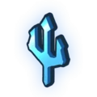
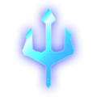
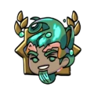
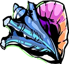
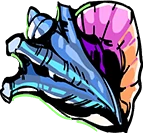
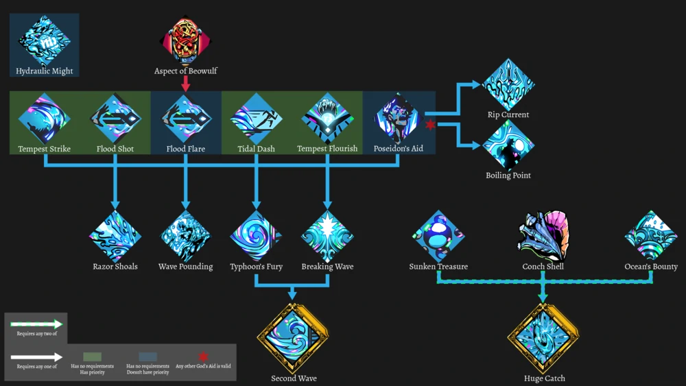

-

-
Recompensa de poseidon
Icono de poseidon
Icono forjado
- Afinidad
Si se le da néctar
 , Poseidón le dará el objeto "Concha" 
, Poseidón le dará el objeto "Concha" 
El indicador de afinidad de Poseidón tiene un máximo de 7 corazones..
- Historia
-
Poseidón es el dios del mar. Ofrece bendiciones a Zagreus que aumentan significativamente el daño de sus habilidades, así como también hacen que sus habilidades inflijan Knockback .
Las bendiciones de Poseidón ofrecen el tercer aumento de daño porcentual bruto más alto en Hades , así como la capacidad de golpear a los enemigos, infligiendo un golpe de pared adicional o daño de trampa.
-
- Personalidad
-
Es en general un dios benevolente, a pesar de que comparte muchas características con Zeus; incluyendo su orgullo, terquedad, y un temperamento terrible.
-
- Entrada del códice
-

' ... El Amo de los Mares, el Sacudidor de la Tierra, Hermano del Señor Hades y del Señor Zeus... el Señor Poseidón. Siempre estoy agradecido de que, mientras vivía, él fue misericordioso conmigo. Aquí abajo, sin embargo, debo decir que rara vez siento su influencia. Todos nosotros... estamos debajo de él, ahora. ¿A cuántos de mis hermanos ahogó durante mis días mortales? Se muestra afable, pero no lo he perdonado. Lord Hades tampoco parece tener amor por él, comparándolo con Zeus y evitando a ambos por igual. Todo es un negocio que es mejor evitar según mi estimación. '
-
- Mecanica
-
Muchas de las bendiciones de Poseidón aplican Empuje a tus habilidades. Knockback provoca la habilidad de empujar a un enemigo a una distancia adicional lejos de Zagreus, en la dirección desde la que fue atacado. Los efectos de retroceso pueden ayudar a habilitar el daño ambiental de Wall Slams y Traps . Los efectos de retroceso también se combinan bien con la maldición de estado de Poseidón, Ruptura, que inflige d año a los enemigos cuando se mueven. Los jefes de área tienen inmunidad contra Knockback, pero se verán afectados por el daño de Rupture.

-